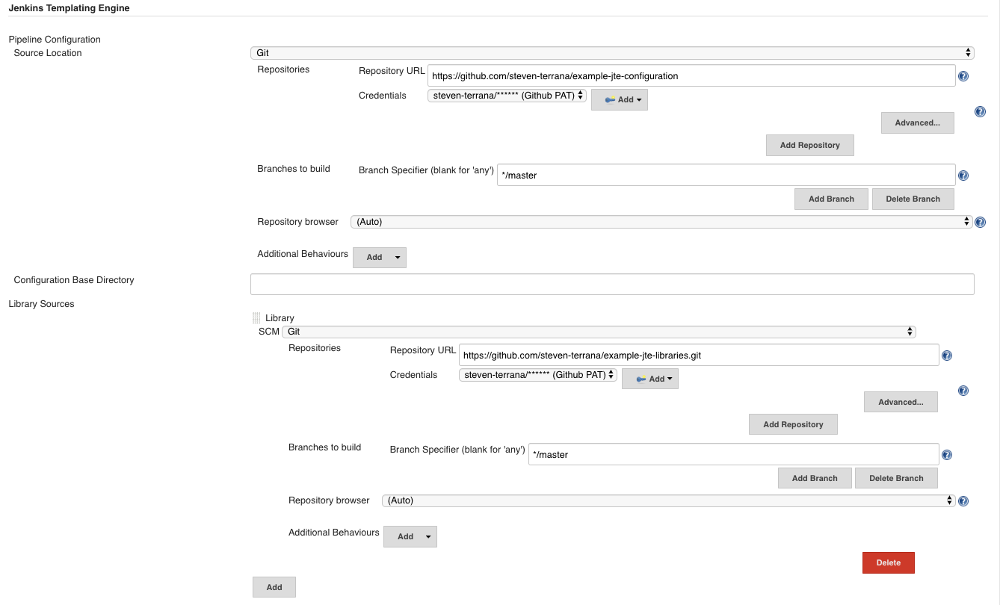
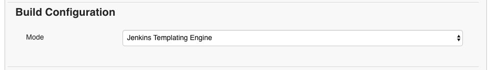
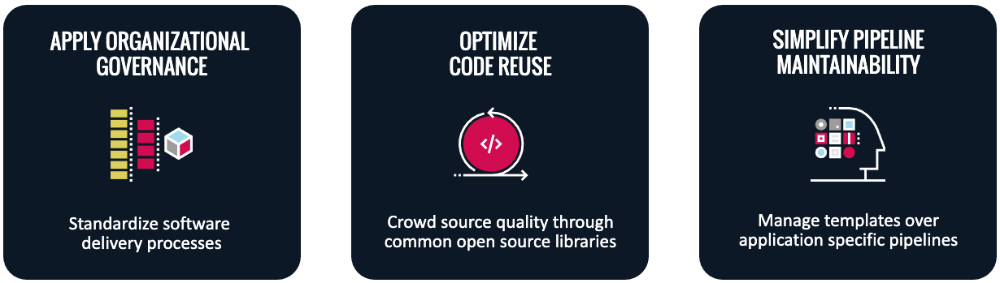

介绍 Jenkins 模板引擎
在企业范围内实施 DevSecOps 实践具有挑战性。由于组织内的不同应用程序正在使用多种编程语言、自动化测试框架和安全遵从性安全合规工具，因此每个团队构建和维护流水线变得很难。
无论应用程序使用哪个特定的技术栈，大多数流水线都将遵循相同的通用工作流。模板引擎插件（简写为 JTE ，用于 Jenkins 模板引擎）允许您通过创建不依赖于工具的模板化工作流来获取效率，每个团队都可以重用这些工作流。
作为公共部门和私营部门客户的技术顾问，我们在 Booz Allen 发现，每个新项目都要从头开始建造 DevSecOps 流水线。通过开发 Jenkins 模板引擎，我们已经看到流水线开发从几个月减少到几天，现在我们可以重用工具集成，同时为 Jenkins 流水线带来新的治理级别。
流水线模板
组织受益于让应用程序开发人员专注于他们最擅长的工作：构建应用程序。支持这个，意味着建立一个集中式的 DevOps 团队，负责维护平台基础设施，并创建开发团队使用的 CI/CD 流水线。
随着基于微服务的体系结构的兴起，一个集中的 DevOps 团队可以同时支持许多不同的开发团队；所有这些团队都可能利用不同的编程语言和自动化测试工具。
虽然开发团队之间的工具可能不同，但工作流通常是相同的：单元测试、静态代码分析、构建和发布制品、部署它，然后针对部署的应用程序执行不同类型的测试。
模板引擎插件允许您从每个被团队定义可继承通用工作流的存储库中删除 Jenkinsfile 。作为替代每个存储库需定义整个流水线，团队提供一个使用工作流的工具配置文件。
JTE 实战
让我们通过一个简单的示例来演示模板的可重用性：
流水线模板例子：
unit_test()
build()
static_code_analysis()
模板利用库提供的步骤概述工作流团队必须实现的步骤。虽然模板的执行方式与任何其他 Jenkinsfile 都一样（这意味着支持标准的脚本化和声明性语法），但模板的目标应该是以纯英语的方式阅读，并避免任何技术实现。
通过这种方式利用模板，您可以将流水线的业务逻辑（应该在什么时候发生）与技术实现（实际将要发生什么）分开。其结果是一个 CI/CD 管道，当同时支持多个团队时，该流水线被证明非常容易管理。
此模板（ unit_test 、 build 和 static_code_analysis ）概述的步骤是专门命名的。通过这种方式，团队可以使用的不同库共享同一流水线。
实现模板
使用模板引擎实现可共享流水线需要几个关键组件： 1. 流水线模板：概述要执行的工作流 2. 库：提供工作流步骤的技术实现 3. 配置文件：指定要使用的库及其配置
步骤1、创建流水线配置存储库
流水线配置存储库用于存储团队继承的常见配置和流水线模板。
这个示例流水线配置存储库稍后将被配置为治理层的一部分：JTE 的机制中允许您构建表示组织的层次结构配置。
治理层包含三个方面：
1. 流水线模板
2. 库资源清单
3. 层的配置文件( pipeline_config.groovy )
治理层的流水线模板和配置文件存储在流水线配置存储库中。
在 Jenkins 中配置治理层时，您将为包含上述组件的存储库以及可以找到这些制品的基本目录提供源代码管理位置。
步骤2、创建流水线模板
接下来，我们将为治理层创建一个 Jenkinsfile 。在 JTE 中， Jenkinsfile 是执行将使用的默认流水线模板。
Jenkinsfile
unit_test()
build()
static_code_analysis()
步骤3、 创建库
模板引擎插件实现了一个版本的 Jenkins 共享库，以增强库的可重用性。库是源代码存储库中的根目录，并且该存储库已在治理层上配置为库源。
在我们的示例中，流水线模板需要执行单元测试、打包制品和运行静态代码分析。
假设我们有一些团队使用 Gradle ，一些团队使用 Maven 来构建和测试他们的应用程序，但是他们都将使用 SonarQube 来执行静态代码分析。
在这个场景中，我们应该创建 gradle 、 maven 和 sonarqube 库。
|- gradle/
\-- build.groovy
\-- unit_test.groovy
|- maven/
\-- build.groovy
\-- unit_test.groovy
|- sonarqube/
\-- static_code_analysis.groovy
步骤4、实施步骤
实现库步骤与将常规全局变量作为默认 Jenkins 共享库的一部分写入完全相同。
为了这个演示的目的，我们将让每个步骤打印出步骤名称和贡献库。
gradle/build.groovy
void call(){
println "gradle: build()"
}
读更多关于 JTE 开发库。
步骤5、创建配置文件
JTE 的配置文件名为 pipeline_config.groovy 。
在治理层，我们将建立一个配置文件，具体说明应用程序之间的共同配置。在此情况下，两种应用都是使用 sonarqube 库。
pipeline_config.groovy
libraries{
merge = true // allow individual apps to contribute additional libraries
sonarqube
}
接下来，我们将创建另外两个表示 Maven 和 Gradle 应用程序的存储库。在这些存储库中，我们只需要一个特定的 pipeline_config.groovy 文件。
这些存储库都包含应用程序 pipeline_config.groovy 配置文件。
maven app: pipeline_config.groovy
libraries{
maven
}
gradle app: pipeline_config.groovy
libraries{
gradle
}
步骤6、在 Jenkins 中配置治理层
既然我们有了流水线配置存储库和库源存储库，那么就可以在 Jenkins 中配置治理层：

上图中显示的配置可以在以下找到
Manage Jenkins >> Configure System。通过模板引擎，您可以通过 Jenkins 中的文件夹表示此结构，从而创建与组织分类相匹配的流水线治理层次结构。
步骤7、为两个应用程序创建多分支流水线
当为每个应用程序创建多分支流水线项目时，模板引擎插件提供一个名为 Jenkins 模板引擎的新 Project Recognizer 。项目设置为在存储库中的所有分支使用模板引擎框架。。

您还可以为 GitHub 组织项目设置 Jenkins 模板引擎项目识别器，使您能够轻松地在整个 GitHub 组织中共享相同的流水线！
步骤8、运行流水线
就这样！现在，这两个应用程序将利用完全相同的流水线模板，同时具有选择工作流每个阶段应使用哪些工具的灵活性。
下面是两个应用程序运行流水线的控制台日志的示例输出：
Gradle:
[JTE] Obtained Template Configuration File pipeline_config.groovy from git https://github.com/steven-terrana/example-jte-configuration
[JTE] Obtained Template Configuration File pipeline_config.groovy from git https://github.com/steven-terrana/example-jte-app-gradle.git
[JTE] Loading Library sonarqube from git https://github.com/steven-terrana/example-jte-libraries.git
[JTE] Loading Library gradle from git https://github.com/steven-terrana/example-jte-libraries.git
...
[JTE] Obtained Template Jenkinsfile from git https://github.com/steven-terrana/example-jte-configuration
[JTE][Step - gradle/unit_test]
[Pipeline] echo
gradle: unit_test()
[JTE][Step - gradle/build]
[Pipeline] echo
gradle: build()
[JTE][Step - sonarqube/static_code_analysis]
[Pipeline] echo
sonarqube: static_code_analysis()
[Pipeline] End of Pipeline
Maven:
[JTE] Obtained Template Configuration File pipeline_config.groovy from git https://github.com/steven-terrana/example-jte-configuration
[JTE] Obtained Template Configuration File pipeline_config.groovy from git https://github.com/steven-terrana/example-jte-app-maven.git
[JTE] Loading Library sonarqube from git https://github.com/steven-terrana/example-jte-libraries.git
[JTE] Loading Library maven from git https://github.com/steven-terrana/example-jte-libraries.git
...
[JTE] Obtained Template Jenkinsfile from git https://github.com/steven-terrana/example-jte-configuration
[JTE][Step - maven/unit_test]
[Pipeline] echo
maven: unit_test()
[JTE][Step - maven/build]
[Pipeline] echo
maven: build()
[JTE][Step - sonarqube/static_code_analysis]
[Pipeline] echo
sonarqube: static_code_analysis()
[Pipeline] End of Pipeline
模板引擎的好处

应用组织治理
利用模板引擎插件，您可以定义企业级的、经过批准的工作流，无论使用什么工具，团队都可以使用这些工作流。这种自上而下的方法使得在组织中扩展和执行 DevSecOps 原则变得非常容易。
优化代码重用
实际上，组织中的每个团队都不需要反复思考如何做相同的事情。在 Booz Allen ，我们已经看到流水线开发时间从几个月减少到几天，因为我们不断地重复使用和扩展模板引擎库组合，作为解决方案交付平台的一部分。
简化流水线可维护性
通常，DevOps 工程师会发现自己同时为多个开发团队构建和支持流水线。通过将工作流与技术实现分离，并将流水线定义合并到一个集中的位置，模板引擎插件允许 DevOps 工程师更快地扩展。
参与进来！
模板引擎插件是开源的，并在 Jenkins 更新中心提供。
我们总是感谢反馈和贡献！如果你有一个有趣的用例或者想问一些问题，可以试试 Gitter 上的模板引擎插件。